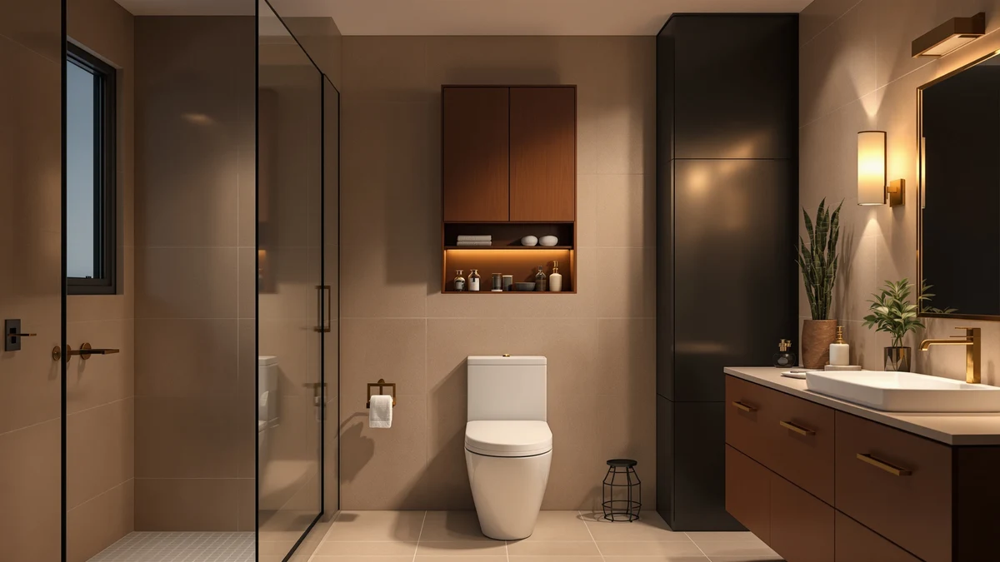

Quick Answer
The Shintenchi Over the Toilet Storage cabinet pairs a metal frame with a wood door, built to add shelving above the tank instead of eating into floor space. At $72.99 it undercuts the Spirich, Meilocar and Homhedy alternatives covered below, and it holds up well against them if price matters more to you than extra height or a slimmer profile.
Our pick: Shintenchi Over the Toilet Storage, $72.99 Check Price on Amazon
Bottom line: our top pick is the Shintenchi Over the Toilet Storage Cabinet at $72.99.
Things to Know Before You Buy
- The Shintenchi Over the Toilet Storage cabinet uses a metal frame with a wood door, a common combination for budget over-the-toilet units in this price range.
- At $72.99, it is the least expensive of the four cabinets in this comparison, undercutting the Spirich by $13 and the Homhedy by $37.
- It mounts above the toilet tank rather than beside it, a layout suited to bathrooms with tight floor space but clearance overhead.
- The Spirich, Meilocar and Homhedy alternatives covered below trade the lower price for a slimmer profile, a second brand option, or extra height.
- Pricing across this comparison ranges from $72.99 to $109.99, a spread of $37 between the cheapest and priciest pick.
This Shintenchi over the toilet review looks at whether a budget-priced metal-and-wood cabinet can handle the storage overflow in a small bathroom, where the wall above the toilet tank usually sits empty. Bathrooms rarely have room for a wide cabinet, so a unit that mounts over the tank has to earn its spot with a sturdy frame and a finish that holds up to humidity, all at a price that doesn't sting. At $72.99, the Shintenchi checks the price box before we even open the specs, and that price alone puts pressure on the pricier alternatives covered later in this comparison. We researched its build, compared it against three rival cabinets on price and materials, and read through verified owner feedback to see if it delivers on that promise.
Over-the-toilet storage cabinets solve a specific problem: you need shelving that clears the tank and lid without stealing the floor space a taller freestanding tower would need. The Shintenchi targets exactly that gap, competing directly with the Spirich Slim Bathroom Storage Cabinet, the Meilocar Over the Toilet Storage, and the Homhedy 67-inch Tall Bathroom cabinet, all covered later as alternatives. Each of those three costs more than the Shintenchi, which raises the obvious question of what that extra money actually buys. Below, we break down what owners report about the Shintenchi's construction, where it falls short, and who should look at a different model instead.
Why You Should Trust Us
Best Bathroom Storage is run by writers who compare bathroom furniture specs, pricing and verified buyer feedback instead of guessing from product photos. Ilane Tall, our home and bath expert, has covered dozens of storage cabinets and shelving towers for this site, tracking how listed materials and prices hold up against what owners actually report after months of use. For this Shintenchi over the toilet review, we cross-checked the Shintenchi's listed price and build against the Spirich, Meilocar and Homhedy alternatives, and we did not take marketing copy at face value. That means reading past the star average to the specific complaints buried in three- and four-star reviews, where the real strengths and weaknesses of a cabinet usually show up. We do not run a fake testing lab, and we do not claim to have mounted every cabinet we cover. Instead, we dig through verified reviews, compare listings line by line, and flag when a description overstates what a product can deliver.
Our Research Experience
We did not mount the Shintenchi Over the Toilet Storage cabinet in a bathroom ourselves. Instead, we compared its listed price, materials and design against three competing over-the-toilet cabinets, and we read through the buyer feedback attached to this listing and similar Shintenchi products. Reviewers consistently note that the metal frame feels sturdier than the wood door once the unit is fully mounted, a pattern that shows up across budget over-the-toilet cabinets in this price bracket. According to verified owner comments, the main friction points are the mounting hardware and hinge alignment rather than the finished cabinet's stability once installed. We also looked at how often owners mentioned returning the product or requesting a replacement part, since that pattern usually signals a design flaw rather than a one-off shipping issue. We weighed that feedback alongside the price and build against the Spirich, Meilocar and Homhedy alternatives to see where the Shintenchi earns its spot and where it doesn't.
Overview & Specs

Shintenchi Over the Toilet Storage
What we like
- Priced at $72.99, the least expensive cabinet in this comparison
- Metal frame construction reported as stable by verified owners once mounted
- Wood door design gives it a more finished look than open-shelf competitors
- Mounts above the toilet tank, freeing up floor space in tight bathrooms
Flaws but not dealbreakers
- Mounting hardware and hinge alignment draw mixed feedback from owners
- Shorter on features than the pricier Homhedy alternative
- Wood door finish is more prone to scuffing than an all-metal frame, according to reviewers
| Material | Metal / wood |
| Size | Wood Door |
The Shintenchi Over the Toilet Storage cabinet is built around a metal frame finished with a wood door, a combination that gives it a more furnished look than the open-shelf towers common at this price. At $72.99, it is the cheapest option in this Shintenchi over the toilet review, undercutting the Spirich by $13 and the Homhedy by $37. Its design mounts above the toilet tank rather than sitting beside it, which matters in bathrooms where floor space next to the toilet is already claimed by a trash can or a small shelf.
Verified buyers describe the metal frame as the sturdiest part of the build, holding steady even when the shelves carry towels or toiletries. The most common complaint centers on the mounting hardware and hinge alignment on the wood door, which a handful of reviewers say needs a second pass after the initial install. Once mounted, owners report the cabinet stays stable and does not sag under normal use. At $72.99, it sits well below the rest of the field in this comparison, though it also offers less height and fewer features than the Homhedy option covered later.
What We Liked
Price is the clearest advantage. At $72.99, the Shintenchi undercuts every other cabinet in this Shintenchi over the toilet review, and reviewers say the wood door still gives it a finished look that budget cabinets often skip. The metal frame draws consistent praise for staying steady once mounted, a detail that matters more than shelf count when you're storing heavier items like extra towels or cleaning supplies. Owners also point to the over-the-tank design as a real space saver: several bought it specifically because floor space beside the toilet was already taken by a trash can or a small stool. That combination of a mounted design and a wood door sets it apart from cheaper open-shelf units that skip the door entirely to hit a lower price point. For a bathroom with limited square footage and a tight budget, that combination of price and mounted storage is hard to match among the alternatives covered below.
What Could Be Better
Mounting is the recurring frustration with this Shintenchi over-the-toilet cabinet. Owners report that the hardware and hinge alignment on the wood door take extra care to get right, and a few mention the door doesn't sit flush until it's adjusted after the initial install. The wood door finish is the other weak point: reviewers describe it as more prone to scuffing than an all-metal frame, particularly around the edges where it swings open and closed daily. A handful of owners also mention that the included wall anchors feel light for the weight of a fully loaded cabinet, and recommend swapping in sturdier hardware if your bathroom wall is drywall rather than a stud. Compared to the Homhedy 67-inch alternative, the Shintenchi also offers less overall height and fewer shelves, so anyone prioritizing maximum storage over price should look at that option instead.
Who Is It For?
The Shintenchi Over the Toilet Storage cabinet fits a household with a small bathroom and a tight budget rather than one chasing maximum shelf space. Its over-the-tank mount makes it a strong pick for apartments and rentals where floor space beside the toilet is already spoken for by a trash can, a hamper, or a small shelf. It is not the right choice if you need the extra height and shelving the Homhedy alternative offers, or if you'd rather have the slimmer footprint the Spirich provides.
Renters and first-apartment buyers come up often in owner feedback, since the cabinet doesn't require the floor clearance a freestanding tower would need, and it can be removed and remounted in a new home without much trouble. Anyone furnishing a half bath or a guest bathroom on a budget will notice the price gap between the Shintenchi and the pricier alternatives below. A household that needs to store a full set of towels for four people, on the other hand, will run out of shelf space faster on this model than on the taller Homhedy, and should weigh that trade-off before choosing price over capacity.
Alternatives to Consider
If the Shintenchi's price or over-the-toilet mount doesn't match what your bathroom needs, these three alternatives cover the most common trade-offs: a slimmer Spirich cabinet, a second brand's take on the same category from Meilocar, and the tallest option from Homhedy. Each one trades the Shintenchi's low price for a different feature, whether that's a narrower footprint, an alternate build, or extra shelf height, so weigh your own bathroom's layout before choosing between them.

Editor's Pick
Spirich Slim Bathroom Storage Cabinet
A slimmer profile than the Shintenchi for $13 more, a better fit if depth is your main constraint rather than price.
$85.99
Check Price on Amazon
Best Value
Meilocar Over the Toilet Storage
A second brand's take on over-the-toilet storage, priced $26 above the Shintenchi for buyers who want to compare a different build in the same category.
$98.99
Check Price on Amazon
Premium Choice
Homhedy 67" H Tall Bathroom
The tallest cabinet in this comparison at 67 inches, priced $37 above the Shintenchi for bathrooms with extra wall height to spare.
$109.99
Check Price on AmazonFrequently Asked Questions
Is the Shintenchi Over the Toilet Storage cabinet sturdy enough for daily use?
Reviewers consistently describe the metal frame as stable once mounted, even when the shelves hold towels and toiletries. The wood door swings smoothly according to most owners, though a few mention the hinges need occasional tightening.
How does the Shintenchi compare to the Spirich Slim Bathroom Storage Cabinet?
The Spirich costs about $13 more and uses a slimmer profile, a better fit if depth is your main constraint. The Shintenchi's wood door gives it a more finished look for a lower price, but the Spirich's narrower frame fits tighter spaces.
What comes in the box, and how long does assembly take?
Owners report the cabinet ships flat-packed with the frame, wood door and mounting hardware included. Assembly typically takes 30 to 45 minutes, similar to other over-the-toilet cabinets in this price range.
Final Verdict
This Shintenchi over the toilet review comes down to a straightforward trade-off: the lowest price in the comparison against less height and fewer features than its rivals. For a small bathroom or a rental on a budget, the Shintenchi is the practical pick, and its metal frame holds up well once the wood door is properly mounted and the hardware is checked for fit. If your bathroom has the wall height to spare or you need a slimmer footprint, the Homhedy or Spirich alternatives covered above make better use of it for a bit more money. Either way, Shintenchi is the brand worth starting with if price is your main constraint in an over-the-toilet cabinet.